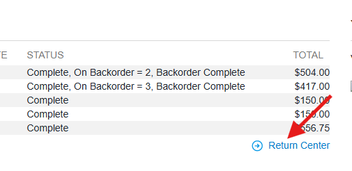
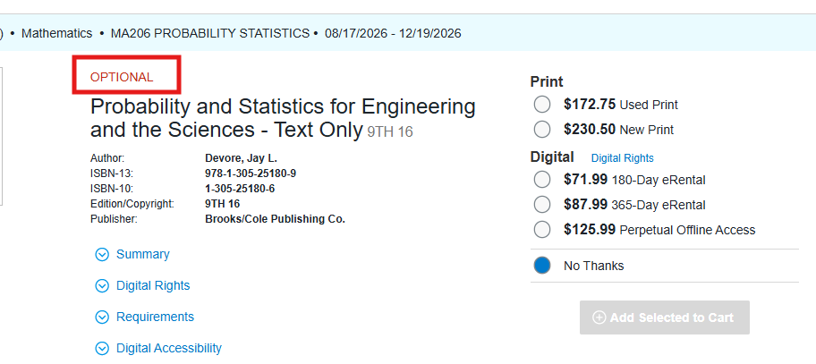
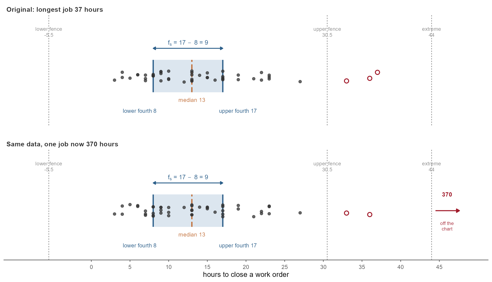

Forge 1
Lessons 2-4
Lessons 2-4: L2 Measures of Location & Variability, L3 Set Theory, L4 Probability Basics
Coverage Plan
| Day | Date | Month | Class day | Hour | Room | Lesson | Out | Covered by |
|---|---|---|---|---|---|---|---|---|
| Wed | 19 | Aug | 1 | E | TH321 | L2 | Lovas | Turner |
| Thu | 20 | Aug | 2 | E | TH321 | L2 | Lovas | Day |
| Thu | 20 | Aug | 2 | F | TH321 | L2 | Lovas | Day |
| Fri | 21 | Aug | 2 | E | TH321 | L3 | Lovas | Day |
| Fri | 21 | Aug | 2 | F | TH321 | L3 | Lovas | Day |
| Tue | 15 | Sep | 2 | A | TH317 | L11 | Strack | needs a volunteer |
| Tue | 15 | Sep | 2 | D | TH321 | L11 | Day | needs a volunteer |
| Wed | 16 | Sep | 1 | A | TH317 | L11 | Strack | needs a volunteer |
| Wed | 16 | Sep | 1 | B | TH317 | L11 | Strack | needs a volunteer |
| Wed | 16 | Sep | 1 | C | TH317 | L11 | Day | needs a volunteer |
| Wed | 16 | Sep | 1 | D | TH317 | L11 | Day | needs a volunteer |
| Wed | 16 | Sep | 1 | D | TH321 | L11 | Strack | needs a volunteer |
To Do
Honor and AI Briefs
Give both. The decks are in DAAW Related Briefs.zip in AY27-1 MA206.
- Academic Security
- Doc of Sources, Ack of Assistance, Cover Page
WPR I Feedback
Read WPR I and send me your feedback by 4 Sep. It is in AY27-1 MA206 > Instructor Materials. Flag anything ambiguous, mis-scoped, or out of order while there is still time to fix it.
Book Return
The bookstore listed Tintle (Wiley) by mistake. Our text is Devore, 9th ed. Cadets should return Tintle and skip buying a hard copy unless they want one.
- Two weeks from purchase. Cadets start the return themselves at bncvirtual.com/westpoint, Your Account > Return Center
- Devore is free online through Cengage Unlimited. Hard copy is optional
- Shop around. Bookstore is $230.50 new, $172.75 used. Amazon was around $60


Vantage Accounts
- Go to vantage.army.mil
- Click Request Account
- Fill out the required information
- For Commander email, use
jonathan.l.day3.mil@army.mil - Approval takes a day or two, so do it now, not the week we need it
Longer walkthrough is HowToVantage.pdf in AY27-1 MA206. We use Vantage for R and for the project all semester.
WebAssign Enrollment
43 cadets are wrong in WebAssign. Fix your own sections from the MA206 ClassView roster.
Wrong day (6)
Drop the wrong class, enroll in the right one.
| Sec | Cadet | Move |
|---|---|---|
| E1 126 | Brocken, Dwayne | 2 to 1 |
| A2 133 | Smith, Milan | 1 to 2 |
| A2 134 | Nwawuihe, Godspower | 1 to 2 |
| C2 148 | Williams, Caleb | 1 to 2 |
| E2 123 | Spaulding, Wyatt | 1 to 2 |
| F2 121 | Ramos, Christian | 1 to 2 |
Not on the roster (2)
| Cadet | In |
|---|---|
| Luft, Alex | Day 1 |
| Burns, Grace | Day 2 |
In both classes (18)
Drop the one that is not Keep. Flag it if they already have work there.
| Sec | Cadet | Keep |
|---|---|---|
| A1 130 | Pidgeon, Michael | 1 |
| A1 131 | Aquino, Noah | 1 |
| B1 143 | Maybury, Layton | 1 |
| B1 143 | Thornton, Abigail | 1 |
| B1 147 | Yoo, Daniel | 1 |
| D1 110 | Price, Tyler | 1 |
| A2 133 | Oblepias, Robynn | 2 |
| A2 133 | Park, Ian | 2 |
| A2 134 | Dortch, Cade | 2 |
| A2 134 | Saftner, Peter | 2 |
| A2 135 | Gibson, Jonathan | 2 |
| B2 146 | Lee, Julia | 2 |
| B2 146 | Martin, Andrew | 2 |
| C2 148 | Williams, Brad | 2 |
| D2 116 | Liu, Melanie | 2 |
| D2 141 | Ahn, Noah | 2 |
| E2 124 | Gu, Caleb | 2 |
| F2 119 | Choi, Joseph | 2 |
In neither class (19)
Self enroll in the class that matches Add.
| Sec | Cadet | Add |
|---|---|---|
| A1 107 | Eugene, Felix | 1 |
| A1 129 | Lum, Finlay | 1 |
| A1 129 | Stewart, Demani | 1 |
| B1 143 | Carter, Van | 1 |
| D1 110 | Ujiie, Adam | 1 |
| D1 139 | Suarez, Nicholas | 1 |
| E1 111 | Dudas, Paloma | 1 |
| E1 126 | Lengemann, Alexa | 1 |
| F1 127 | Duvall, Micah | 1 |
| F1 127 | Hoang, Maxwell | 1 |
| F1 127 | Torrellas Santiago, Jose | 1 |
| A2 133 | MacDougall, Declan | 2 |
| A2 134 | Martini, Jake | 2 |
| C2 115 | Cotterill, Jacob | 2 |
| E2 123 | Mass, Harrison | 2 |
| F2 118 | Reddington, Merrick | 2 |
| F2 118 | Walker, Noah | 2 |
| F2 121 | Hamburger, Wilhelm | 2 |
| F2 121 | Leyva, Ricardo | 2 |
Where Block I Is Headed
Block II is inference. Read this right to left: each thing we teach exists because the thing pointing at it cannot be taught without it.
Lesson 2: Measures of Location and Variability
Devore 1.3, 1.4, and S2.
Ways to Frame the Discussion

Let Them Invent the Vocabulary
- Where it sits. Mean, median, trimmed mean. Three answers to one question. Which you report depends on what the tail is doing.
- How wide it is. Standard deviation, variance, fourth spread. Same idea. Pair the mean with \(s\), pair the median with the fourth spread, and do not mix them.
- Crazy observations. Fence them with the fourth spread, mild past \(1.5 f_s\) outside the fourths, extreme past \(3 f_s\). Say out loud that a committee picked 1.5. Then answer the question they will ask. Throwing one out is an ethics call, and it is no unless you can name the reason: a transcription error, a stopwatch that failed, a soldier who never ran the lane. “It weakens my conclusion” is not a reason.

Lesson 3: Set Theory
Devore 2.1.
The experiment. One soldier is picked at random from a company of 100. Forty are expert with the rifle, thirty with the pistol, ten with both. Run the whole period off that one sentence.
Build it in three passes, in this order. Each pass is the same company, said a different way.
1. Counts first. Put up the table and have them fill it. No notation yet, just arithmetic they cannot get wrong.
| Pistol | No pistol | Total | |
|---|---|---|---|
| Rifle | 10 | 30 | 40 |
| No rifle | 20 | 40 | 60 |
| Total | 30 | 70 | 100 |
2. Words to picture. Now say a phrase in plain English and have them shade it. The counts carry over, so nothing is abstract yet.
3. Words to symbols. Only now write the notation, and write it next to the phrase it replaces. This is the translation the rest of Block I runs on.
| Say this | Write this | Count |
|---|---|---|
| expert with both | \(R \cap P\) | 10 |
| expert with either | \(R \cup P\) | 60 |
| not expert with the rifle | \(R^c\) | 60 |
| expert with neither | \((R \cup P)^c = R^c \cap P^c\) | 40 |
Run it the other way too. Give them \(R^c \cap P\) and make them say it out loud, then point at the cell.
Lesson 4: Probability Basics
Devore 2.2.
The three axioms. Everything else in the block is derived from these, so derive them live rather than handing out a rule sheet.
- \(P(A) \ge 0\) for every event \(A\).
- \(P(S) = 1\).
- For disjoint events, probability adds. \(P(A_1 \cup A_2 \cup \cdots) = \sum_i P(A_i)\) when no two of them can happen together.
The addition rule. The overlap is inside both circles, so adding \(P(A)\) and \(P(B)\) counts it twice. Subtract it once.
\[P(A \cup B) = P(A) + P(B) - P(A \cap B)\]
Three events. Same idea run twice. Add the singles, subtract the pairs, add the middle back, because subtracting all three pairs takes the centre out one time too many.
\[P(A \cup B \cup C) = P(A) + P(B) + P(C) - P(A \cap B) - P(A \cap C) - P(B \cap C) + P(A \cap B \cap C)\]
The complement rule. Same axiom. \(A\) and \(A^c\) are disjoint and union to \(S\), so their probabilities add to 1. Derive it live, do not hand it out.
\[P(A^c) = 1 - P(A)\]
Before the Next Forge
Only Day 2 sees Lesson 4 before we meet on 25 Aug. Day 1 gets it Wed 26 Aug.